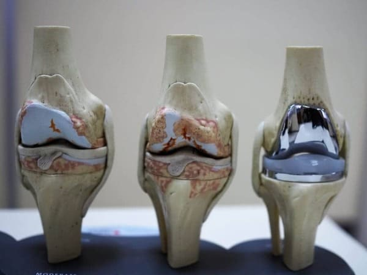

Eine Gelenkbehandlung ist ein Leben lang! Die Ärzte behandeln die Dauerpatienten mit teuren Medikamenten, die sie abhängig machen und sie "einsperren".
In Europa herrscht die Meinung vor, dass die deutschen Rentner aufgrund ihrer hohen Renten besser leben als die Rentner der anderen Länder. Aber das ist, wie die Rentner selbst sagen, die größte Illusion der europäischen Gesellschaft. Laut einer Statistik des Unabhängigen Forschungsinstituts kommen nur 3,5% der deutschen Rentner in den Genuss von wohlverdienter Erholung, Reisen und Lebensfreude. Die anderen müssen ihre Ausgaben für teure Behandlungen von altersbedingten Krankheiten begrenzen.
"Es ist an der Zeit, aufzuhören, Menschen auszunutzen und Rentner aus ihrer Sklaverei zu befreien".
Dr. Thomas STEFFOLS, orthopädischer Chirurg, Autor zahlreicher wissenschaftlicher Arbeiten, Schöpfer des weltweit bekannten Implantats "Coflex", Gründer des Unternehmens "Immospina", spezialisiert auf die Erfindung neuer Implantate für die Wirbelsäule. Gründer des Unternehmens "Immospina", das sich auf die Erfindung neuer Implantate für die Wirbelsäule spezialisiert hat.
"Welches Interesse haben öffentliche Hilfsprogramme, wenn sie nicht darauf abzielen, das Leben der schwächsten Gruppen der Gesellschaft zu verbessern? Unsere Rentner sind zu Kanonenfutter der Gesellschaft geworden, die mit ihnen macht, was sie will. Nehmen Sie zum Beispiel die kriminellen Machenschaften von Ärzten in der ganzen Welt.
Sie betreffen das empfindlichste Organ - die Gelenke, die mit zunehmendem Alter auf die eine oder andere Weise alle Menschen über 40 Jahre betreffen. Als Unfallarzt und orthopädischer Chirurg kann ich die Opfer der Schiedsrichter nicht länger sehen und schweigen..."
"Es ist an der Zeit, dass die deutschen, Senioren, sich das nehmen, was ihnen zusteht: sich vom Schmerz zu befreien".
"Warum sollten meine Kollegen und ich selbst Menschen dem Risiko aussetzen, bei Gelenkoperationen, die zu 98% hätten vermieden werden können, eine Gliedmaße zu verlieren?"
Warum informieren Ärzte und Apotheken auf allen Ebenen die Menschen nicht über unser neues Medikament, das die Gelenke innerhalb eines Monats ohne Operation vollständig wiederherstellen kann?
Ich beantworte Sie! Denn in diesem Fall mussten die Pharmaunternehmen Verluste in Höhe von mehreren Millionen hinnehmen. Gegenwärtig ist jedes der pharmakologischen Produkte darauf ausgelegt, die Symptome für einen kurzen Zeitraum zu lindern. Sie bieten vorübergehende Linderung und erfordern, dass eine Person sie immer wieder verwendet, um Schmerzen über einen bestimmten Zeitraum zu lindern.
In 98% der Fälle einer Gelenkbehandlung in Österreich verschreibt der Arzt Injektionen und Medikamente, die das Gelenk nicht schützen, sondern nur vorübergehend die Schmerzen lindern. Was die Situation eigentlich verschlimmert.Später hört das Medikament auf, die Schmerzen zu lindern, und es kommt das nächste Mittel zum Einsatz. Und so passiert es. Ärzte verschreiben Medikamente, die keine Wirkung auf die Ursache der Gelenkschmerzen haben, und leiden unter einer Vielzahl von Beschwerden seitens der Pharmaunternehmen.
So wird unseren Älteren Geld abgezapft. Wir erhalten ein gewisses Maß an Erleichterung, aber gleichzeitig halten sie die Schmerzen in den Gelenken in Fesseln.
Untersuchungen unseres Instituts haben gezeigt, dass ältere Menschen in Österreich 75% oder mehr ihres Einkommens für teure Medikamente ausgeben, unabhängig davon, ob diese von "guter Qualität" sind oder nicht. Gleichzeitig wird im Laufe des Jahres das meiste Geld für Medikamente zur gemeinsamen Behandlung ausgegeben.
Das Schlimmste ist jedoch, dass sich die Gelenke in dieser Zeit über Jahre hinweg weiter verschlechtern, was zu völliger Bewegungseinschränkung, Behinderung und sogar zum Tod führen kann. Wenn die Situation kritisch wird, verweisen sie die Menschen für einen chirurgischen Eingriff an unser Zentrum. Und das ist ein ganz anderes Risiko und eine ganz andere Verantwortung. Manchmal gibt es keine andere Möglichkeit, als das Gelenk zu ersetzen, also setzen wir Implantate ein. Aber Prothesen sind teuer und nicht jeder kann sie sich leisten.
Auf haben 128 Patienten, die mich auf Verschreibung ihres Arztes aufgesucht haben, um sich unters Messer zu legen, dank einer einzigen Anwendung von eine Gelenkoperation vermieden.Nano-Spray stellt das Gelenk in einer einzigen Anwendung wieder her, beseitigt dauerhaft die Schmerzen und hilft, in 9 von 10 Fällen die Operation zu vermeiden.
Es wird jedoch weder von Ärzten verschrieben noch in Apotheken verkauft. Uns liegen nämlich die Ergebnisse von fünfjährigen Studien vor.
Wir haben bereits eine Reihe von Tests durchgeführt und hunderte positive Bewertungen erhalten.
Kundenbewertungen
4,7 von 5
1216 Gesamtwertung
5 Sterne
72%
4 Sterne
32%
Nach Merkmalen
Einfach zu verwenden
4,7
Effektivität
5,0
Lesen Sie die Kommentare anderer Leute
Beste Kritiken aus Österreich

Benedikt Pfeiffer
Dieses Spray hat mir eine gesunde Beweglichkeit meiner Hände zurückgegeben
Deutscher Kommentar vom
Bestätigter Kauf
Ich fühle mich zum ersten Mal gesund und mobil
Ich habe eine Bindegewebsdysplasie. Hier auf dem Foto oben habe ich gezeigt, wie es war. Ich war auf der Suche nach etwas, das mir helfen würde, die starken Schmerzen der eingeklemmten Nerven zu überwinden, da ich mich immer Mühe zu geben hatte, um sich ständig mit teuren verschreibungspflichtigen Medikamenten zu versorgen, oder gezwungen war, Tage in der Notaufnahme zu verschwenden, weil ich zu große Schmerzen hatte, um zu leben. Ich habe Herz- und Nierenprobleme aufgrund einer Überdosierung von Medikamenten. Wenn man bedenkt, wie viel mir meine Medikamente bereits gekostet hatten und wie viel Zeit ich bereits in der Hoffnung auf eine Lösung verloren hatte, beschloss ich, dass es sich lohnte, auszuprobieren, und kaufte gleich mehrere Packungen.
Nach der ersten Anwendung von habe ich alles weggeworfen, was ich vorher ausprobiert habe, es ist das einzige, was effektiv funktioniert.
Später fand ich heraus, dass die Erkrankung meines Freundes, die sich von meiner unterschied, eine Bandscheibendegeneration verursacht hatte. Wegen der Schmerzen konnte sie kaum laufen und verbrachte die meiste Zeit ihres Lebens mit extrem hoch dosierten Medikamenten, die die Schmerzen kaum linderten. Ich habe ihr gegeben. Einen Monat später trafen wir uns, und sie umarmte mich unter Tränen. hat ihr so sehr geholfen, dass sie ihre Schmerzmittel absetzen konnte und in der Lage war, jeden Tag spazieren zu gehen; etwas, das sie seit über 20 Jahren nicht mehr tun konnte!
Benedikt Pfeiffer, 40, Berlin
Es hat das Problem der eingeklemmten Nerven gelöst und die Bindegewebsdysplasie gelindert.
Das Medikament ist von der European Orthopedic Union und der European Association of Orthopedic Surgeons zugelassen. Zusätzlich zu unseren Forschungsergebnissen wurden unabhängige Untersuchungen vom Institut für Orthopädie und Traumatologie in Rom durchgeführt, die ebenfalls die sensationellen Ergebnisse unserer Rezeptur bestätigt haben.
- das erste Nano-Spray, das die Gelenkstruktur in 1 Monat wiederherstellt.Viele unserer Patienten empfehlen das Spray an Freunde und Familie weiter. Die Verfügbarkeit dieses Arzneimittels kann Leben retten.
Kundenbewertungen
4,3 von 5
1136 Gesamtwertung
5 Sterne
69%
4 Sterne
35%
Nach Merkmalen
Einfach zu verwenden
4,3
Effektivität
5,0
Lesen Sie die Kommentare anderer Leute
Beste Kritiken aus Österreich

Pia Schneider
Dieses Spray hat mich buchstäblich wieder auf die Beine gebracht. Ich kann wieder laufen!
Deutscher Kommentar vom
Bestätigter Kauf
Ich kann wieder gehen und lebe mein Leben in vollen Zügen.
Ich habe mir den Oberschenkelhals gebrochen und mein Leben buchstäblich in ein Vorher und ein Nachher geteilt. Ich bin 45 Jahre alt und in diesem Alter ist die Genesung nach einem Oberschenkelhalsbruch sehr langsam und problematisch. Und die Schmerzen waren so schlimm, dass ich wochenlang nicht schlafen konnte.
Als ich mir das Bein so schwer brach, kam mein ganzes Leben zum Stillstand. Ich konnte nicht arbeiten und ich konnte nicht ausgehen. Ich wurde von meiner Familie betreut. Die Ärzte führten eine Osteosynthesedurch, d. h. die Implantation einer speziellen Struktur. Der Arzt erklärte mir dann, dass es zwei Arten von Zellen gibt: Osteoblasten und Osteoklasten. Nun bauen Osteoklasten in meinem Alter bereits Knochen ab. Daher ist der Heilungsprozess langsam und schmerzhaft.
Schmerztabletten haben mir nicht geholfen. Ich habe buchstäblich vor Schmerzen geheult. Ich konnte nicht an Familienfeiern teilnehmen, da mir jede Bewegung, auch nach der Operation, schwer fiel. Ich verwandelte mich in einen Geist und mein Leben wurde grau.
Ich habe viele Schmerzmittel und Vitamine ausprobiert. Es gab keine nennenswerten Ergebnisse. Das hat zwar wenig geholfen, aber es war nur vorübergehend.
Mein Mann hat mir einmal mitgebracht. Es wurde ihm auf der Arbeit empfohlen, weil ein Verwandter von ihm den gleichen Bruch erlitten hatte und ihm half.
Als ich anwendete, verschwanden die Schmerzen. Nur dank konnte ich schmerzfrei schlafen und habe mich schnell erholt. Nach einer Woche konnte ich das Bett verlassen und selbstbewusst durch die Wohnung gehen. Nach eineinhalb Wochen ging ich draußen spazieren. Endlich konnte ich wieder frische Luft atmen und Zeit mit meiner Familie verbringen. Es war, als hätte ich wieder Flügel und spürte das Glück auf eine neue Weise. Jetzt laufe ich überall mit Freude und ohne müde zu werden. stellt die Funktion von Knochen und Knorpel wieder her. Ich bin glücklich und meinem Mann dankbar!
Pia Schneider, 45, Heidelberg
Nach einer schweren und lebensbedrohlichen Fraktur kann sie wieder gehen.
- ein Spray gegen Gelenkschmerzen mit kühlender Wirkung:
- Lindert sofort Schmerzen.
- Wiederherstellung der Funktion des Knochen- und Knorpelgewebes.
- Der Entzündungsprozess wird gestoppt.
- Entfernt Schwellungen.
- Gleicht den Mangel an Synovialflüssigkeit aus.
- Es beginnt den Prozess der vollständigen Erneuerung und Wiederherstellung beschädigter Zellen des Gelenkgewebes.
- Es dringt sofort in die Haut und tief in die Gelenke ein und liefert Nährstoffe für die Zellreparatur.
Das Spray enthält keine krebserregenden Stoffe, Allergen oder synthetische Chemikalien.
besteht ausschließlich aus Heilpflanzenextrakten, die dank der Synergie der Substanzen die Aufbau- und Regulationsprozesse des Organismus in Gang setzen.
Die ätherischen Öle von Menthol, Zimt und Eukalyptus beugen der Zerstörung von Gelenken und Bändern vor, lindern Gelenkschmerzen und reduzieren den Schmerz im Gelenkgewebe.
Panthenol und Allantoin helfen, die Entzündungszeichen zu stoppen und einen Schutzfilm auf dem entzündeten Gewebe zu bilden.
Extrakte aus Teufelskralle und Arnika erhöhen die Beweglichkeit der Gelenke und verbessern die Blutzirkulation.
Glukosamin und Chondroitin stärken Knorpel, Sehnen und Bänder, reduzieren Entzündungen und Entzündungen und fördern die aktive Knorpelregeneration.
Die Vitamine E und B3 wirken abschwellend, nährend, straffend und fördern die Regeneration des Gewebes.
Die Ergebnisse der klinischen Tests haben die Unternehmen verblüfft und die Wissenschaft begeistert!
"...Wir können nicht zum Preis von verkaufen! Dieses Produkt kann in Apotheken zu einem Preis von mindestens 200 euro pro Einheit verkauft werden. Wir sind gezwungen, den Preis einige Male zu erhöhen, weil wir auf diese Weise das Nachfrageausfall bei den übrigen Produkten ausgleichen und ein Gleichgewicht im Verkauf aufrechterhalten können. Nicht alle deutschen werden dieses teure Produkt kaufen können, was bedeutet, dass die Menschen andere, weniger wirksame Arzneimittel kaufen werden.
eignet sich für die Behandlung von Osteochondrose, Osteoarthritis, Arthrose und anderen Gelenkproblemen, einschließlich altersbedingter Traumata.
hat eine vollständige Wiederherstellung der Gelenkstruktur innerhalb von 1 Monat gezeigt (der niedrigste Prozentsatz war in der Gruppe der Autoimmunerkrankungen und betrug 87% Wiederherstellung). ist bei der Behandlung von Gelenken und der Wiederherstellung von Gelenkgeweben zehnmal wirksamer als herkömmliche Arzneimittel.hilft auch in den schwierigsten Fällen. Die Menschen stehen buchstäblich auf und holen sich neue Motivation.
Dank unserer einzigartigen Formulierung ist in der Lage, alle Arten von Gelenkproblemen zu behandeln:
Arthritis.
Arthrose.
Osteoarthritis.
Osteochondrose.
Osteoporose.
Meniskusverletzung.

Arthrose des Kniegelenks.
Schmerzen in den Gelenken jeglicher Ätiologie.
Dr. Thomas STEFFOLS
"In allen Studien zum ist der Anteil der Nebenwirkungen gleich 0%. Dies war unsere Priorität vom Beginn der Entwicklung bis zum Ende unserer Forschung. Es war uns wichtig, ein Produkt zu entwickeln, das es älteren Menschen ermöglicht, das Leben im Ruhestand zu genießen, anstatt unter starken Schmerzmitteln in einem Krankenhausbett festzusitzen und in schrecklicher Depression auf das Ende des Lebens zu warten.
Sie können das Originalspray von in Österreich nur auf dieser Website bestellen!
Da wir über alle Lizenzen, Konformitätsbescheinigungen und die Genehmigung zur Verwendung des -Gelenkbehandlungssprays verfügen, sind wir der einzige Verkäufer des Originalsprays. Das offizielle Bestellformular für das ermäßigte finden Sie auf dieser Seite.
FÖRDERUNG FÜR DEUTSCHSPRACHIGE AUFENTHALTSBERECHTIGTE AB 18 JAHREN
1. Um zum Preis von zu erhalten und einen Rabatt von 50% zu bekommen, müssen Sie zum Zeitpunkt der Bestellung 18 Jahre alt sein.
2. Die Menge ist begrenzt. Der Rabatt wird gewährt, wenn der ermäßigte Artikel zum Zeitpunkt der Bestellung verfügbar ist.
WICHTIG! Studien haben gezeigt, dass der der beste Zeitpunkt für den Beginn einer Gelenkbehandlung ist. Durch die Stabilisierung der Durchschnittstemperatur werden die Stoffwechselprozesse des Körpers beschleunigt und die Wirkung des Sprays intensiviert. Die Behandlung erfolgt um 37% schneller als zu anderen Zeiten des Jahres.